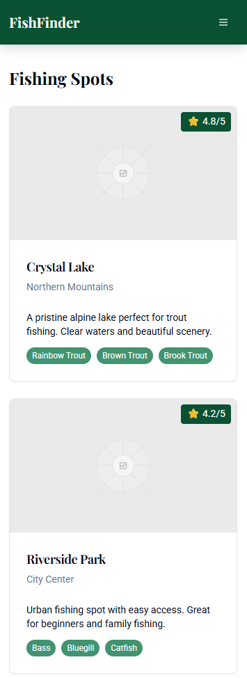

Site Name
Fly Fishing Guide
This name was selected because it clearly communicates the site's purpose.
Site Purpose
Fly Fishing Guide serves as a comprehensive platform for both beginners and experienced fly fishers. The site provides:
- Detailed guides on fly fishing techniques and equipment
- Local fishing spot recommendations and conditions
- Fly tying tutorials and patterns
- Seasonal fishing reports and forecasts
- Community forum for sharing experiences and tips
- Equipment reviews and recommendations
Scenarios
- What are the best flies to use for trout in spring?
- Where are the best fly fishing spots near me?
- How do I tie a basic dry fly pattern?
- What equipment do I need to start fly fishing?
- What are the current water conditions at my favorite fishing spot?
Color Schema
#1b4332
#2d6a4f
#40916c
Primary Color (#1b4332): Used for headings, navigation, and important UI elements. This deep forest green reflects the natural environment of fly fishing.
Secondary Color (#2d6a4f): Used for buttons and interactive elements. This sage green provides a natural, calming presence.
Accent Color (#40916c): Used for highlights, hover states, and call-to-action elements. This emerald green adds vibrancy while maintaining the natural theme.
Typography
Heading Font: Playfair Display
Used for all headings (h1, h2, h3) to provide an elegant and sophisticated appearance that reflects the timeless nature of fly fishing.
Body Font: Roboto
Used for all body text, providing excellent readability and a clean, modern look that works well for instructional content and articles.
Wireframe
Mobile View

- Single column layout
- Hamburger menu for navigation
- Stacked fishing spot cards
- Full-width images
- Collapsible technique guides
Desktop View

- Multi-column layout
- Horizontal navigation menu
- Sidebar for weather and conditions
- Grid-based fishing spot display
- Interactive map integration